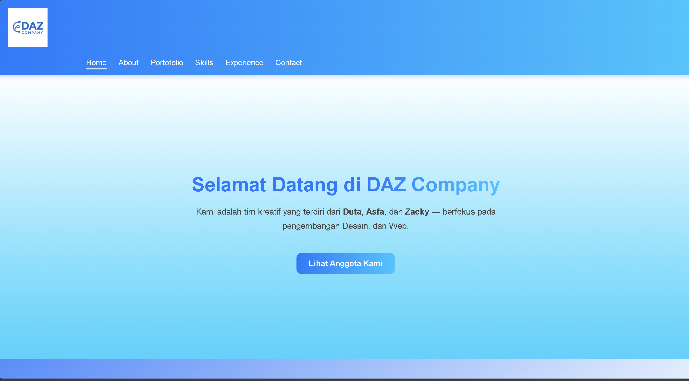
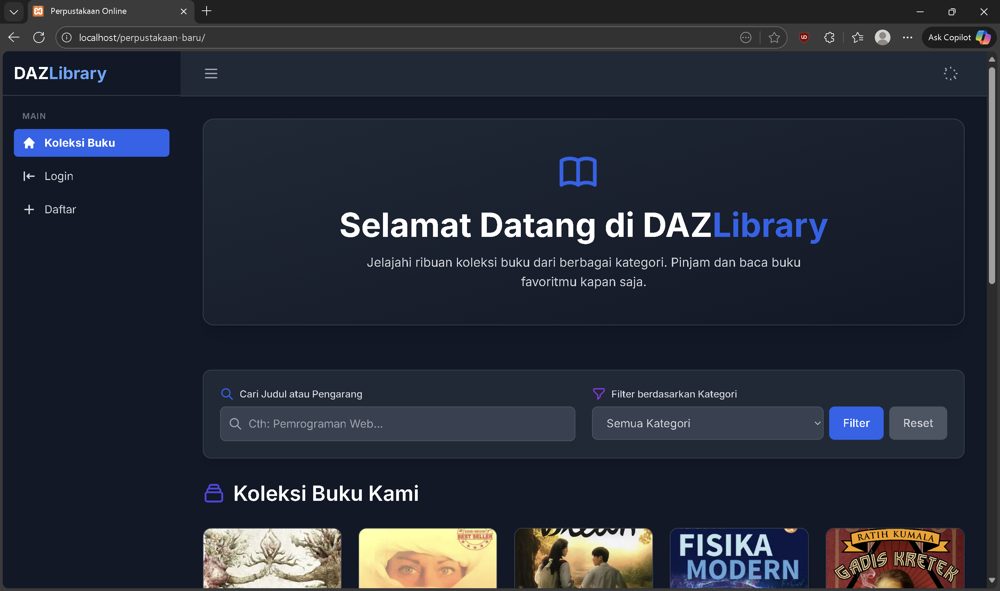

Kumpulan proyek terbaik dari Duta, Asfa, dan Zacky — mencerminkan kreativitas dan kemampuan kolaborasi kami.

Proyek pembuatan web yang berisi data diri, pengalaman, dan beserta kontak kami.

Proyek pembuatan web perpustakaan online berbasis PHP.